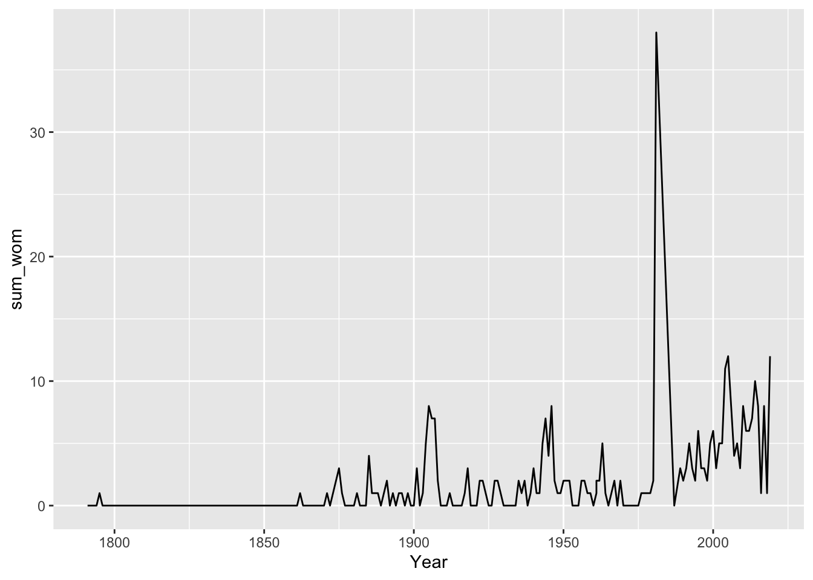
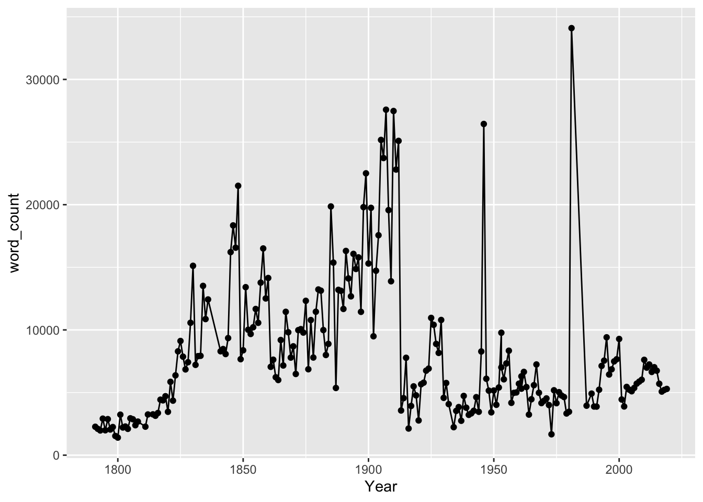
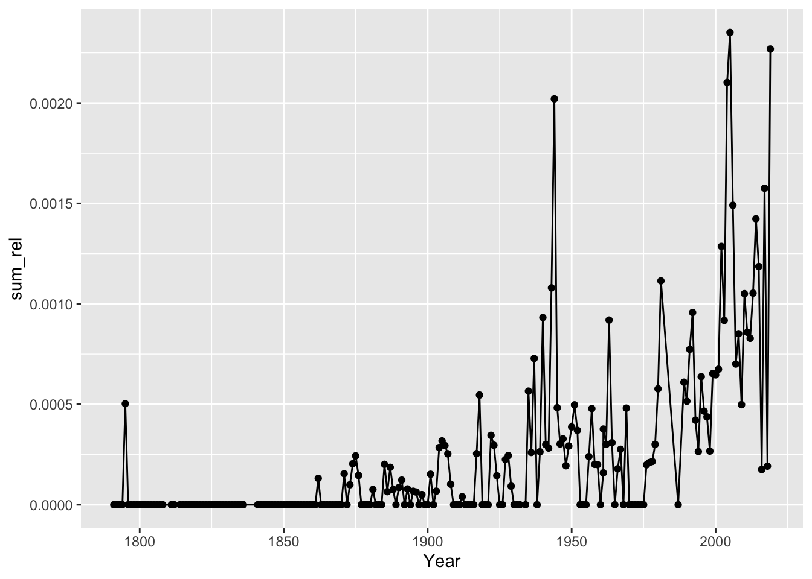
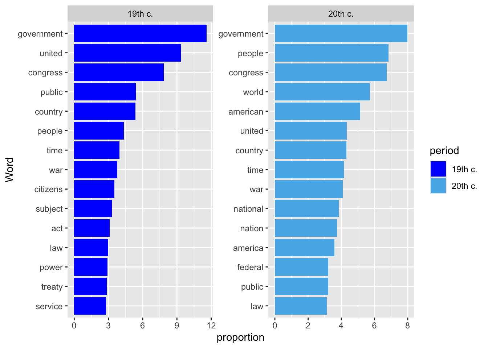
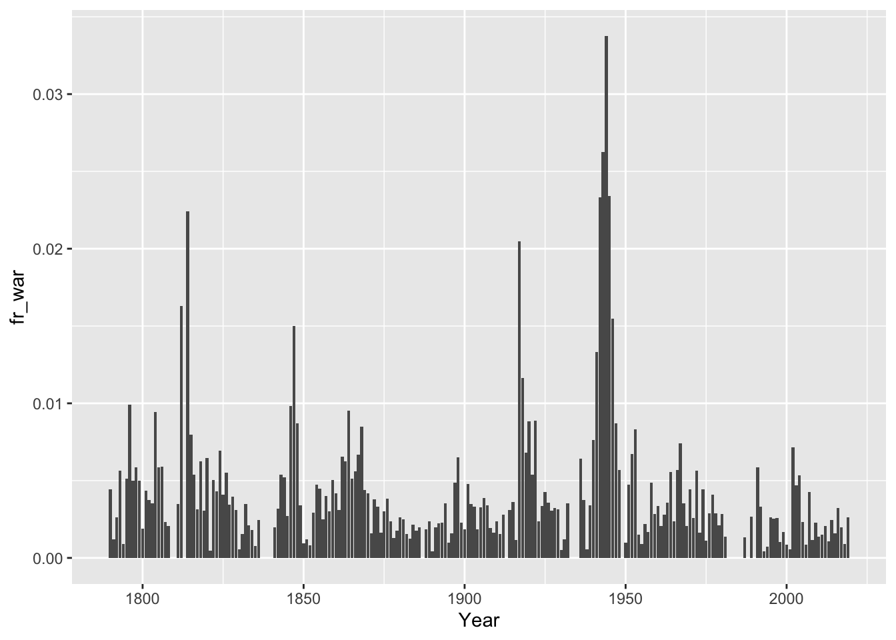

# Clear de "Global Environment"
rm(list=ls())
# Sets the working directory
setwd("~/Documents/quants")
# Install/load packages
install.packages("tidytext")
library(tidyverse)
library(tidytext)
# Importing the data
speeches <- read_csv("data/state-of-the-union-texts.csv")Case-Study 2: The State of the Union Presidential Speeches
This second case-study explores how computational methods help extracting information from unstructured texts. We are only going to introduce very basic tools that basically count words. There are however more sophisticated tools, so take this just a first taste into this topic.
Preliminary steps
As explained in the previous section, we need to include some preliminary commands in our script so we (1) get rid of other objects that could be in the R environment from previous sessions, (2) set the working directory, (3) load (and install if necessary) the packages we plan to use, and (4) import the dataset. Apart from the tidyverse, we will also make use of the tidytext package that contains many of the functions to treat textual corpuses. Importin the .csv file containing the corpus into R involves using the command read_csv() which is part of the tidyverse.
Inspecting the data
Let’s start by having a first look at the data itself typing the name of the object we just created (speeches). As shown below, the contents of the tidyverse have been nicely structured into a data frame containing 4 columns (different pieces of information) and 235 rows (one for each speech).
speeches# A tibble: 219 × 4
President Year Title Text
<chr> <dbl> <chr> <chr>
1 George Washington 1790 First State of the Union Address "['I embrace with…
2 George Washington 1790 Second State of the Union Address "['Fellow-Citizen…
3 George Washington 1791 Third State of the Union Address "['Fellow-Citizen…
4 George Washington 1792 Fourth State of the Union Address "['Fellow-Citizen…
5 George Washington 1793 Fifth State of the Union Address "['Fellow Citizen…
6 George Washington 1794 Sixth State of the Union Address "['Fellow Citizen…
7 George Washington 1795 Seventh State of the Union Address "['Fellow Citizen…
8 George Washington 1796 Eighth State of the Union Address "['Fellow Citizen…
9 by John Adams 1797 First State of the Union Address "['I was for some…
10 by John Adams 1798 Second State of the Union Address "['Gentlemen of t…
# ℹ 209 more rowsWe can use the functions we are already familiar with to continue exploring the data. We can see for instance that two speeches were delivered in 1790 (there is only one speech each year from then on), something we will need to take into account later.
speeches |>
count(Year)# A tibble: 216 × 2
Year n
<dbl> <int>
1 1790 2
2 1791 1
3 1792 1
4 1793 1
5 1794 1
6 1795 1
7 1796 1
8 1797 1
9 1798 1
10 1799 1
# ℹ 206 more rowsLooking at the column President (and sorting it out by those with higher counts) indicates that
speeches |>
count(President, sort = TRUE)# A tibble: 41 × 2
President n
<chr> <int>
1 Franklin Delano Roosevelt 12
2 Dwight D. Eisenhower 9
3 Andrew Jackson 8
4 Barack Obama 8
5 Bill Clinton 8
6 George W. Bush 8
7 George Washington 8
8 Grover Cleveland 8
9 Harry S. Truman 8
10 James Monroe 8
# ℹ 31 more rowsIt is also possible to have a look at the text of the speeches themselves. The code below for instance, takes the object data and prints the contents of fourth row of the field Text.
speeches$Text[4] [1] "['Fellow-Citizens of the Senate and of the House of Representatives:', 'It is some abatement of the satisfaction with which I meet you on the present occasion that, in felicitating you on a continuance of the national prosperity generally, I am not able to add to it information that the Indian hostilities which have for some time past distressed our Northwestern frontier have terminated.', 'You will, I am persuaded, learn with no less concern than I communicate it that reiterated endeavors toward effecting a pacification have hitherto issued only in new and outrageous proofs of persevering hostility on the part of the tribes with whom we are in contest. An earnest desire to procure tranquillity to the frontier, to stop the further effusion of blood, to arrest the progress of expense, to forward the prevalent wish of the nation for peace has led to strenuous efforts through various channels to accomplish these desirable purposes; in making which efforts I consulted less my own anticipations of the event, or the scruples which some considerations were calculated to inspire, than the wish to find the object attainable, or if not attainable, to ascertain unequivocally that such is the case.', 'A detail of the measures which have been pursued and of their consequences, which will be laid before you, while it will confirm to you the want of success thus far, will, I trust, evince that means as proper and as efficacious as could have been devised have been employed. The issue of some of them, indeed, is still depending, but a favorable one, though not to be despaired of, is not promised by anything that has yet happened.', 'In the course of the attempts which have been made some valuable citizens have fallen victims to their zeal for the public service. A sanction commonly respected even among savages has been found in this instance insufficient to protect from massacre the emissaries of peace. It will, I presume, be duly considered whether the occasion does not call for an exercise of liberality toward the families of the deceased.', 'It must add to your concern to be informed that, besides the continuation of hostile appearances among the tribes north of the Ohio, some threatening symptoms have of late been revived among some of those south of it.', 'A part of the Cherokees, known by the name of Chickamaugas, inhabiting five villages on the Tennessee River, have long been in the practice of committing depredations on the neighboring settlements.', 'It was hoped that the treaty of Holston, made with the Cherokee Nation in July, 1791, would have prevented a repetition of such depredations; but the event has not answered this hope. The Chickamaugas, aided by some banditti of another tribe in their vicinity, have recently perpetrated wanton and unprovoked hostilities upon the citizens of the United States in that quarter. The information which has been received on this subject will be laid before you. Hitherto defensive precautions only have been strictly enjoined and observed.', 'It is not understood that any breach of treaty or aggression whatsoever on the part of the United States or their citizens is even alleged as a pretext for the spirit of hostility in this quarter.', 'I have reason to believe that every practicable exertion has been made (pursuant to the provision by law for that purpose) to be prepared for the alternative of a prosecution of the war in the event of a failure of pacific overtures. A large proportion of the troops authorized to be raised have been recruited, though the number is still incomplete, and pains have been taken to discipline and put them in condition for the particular kind of service to be performed. A delay of operations (besides being dictated by the measures which were pursuing toward a pacific termination of the war) has been in itself deemed preferable to immature efforts. A statement from the proper department with regard to the number of troops raised, and some other points which have been suggested, will afford more precise information as a guide to the legislative consultations, and among other things will enable Congress to judge whether some additional stimulus to the recruiting service may not be advisable.', 'In looking forward to the future expense of the operations which may be found inevitable I derive consolation from the information I receive that the product of the revenues for the present year is likely to supersede the necessity of additional burthens on the community for the service of the ensuing year. This, however, will be better ascertained in the course of the session, and it is proper to add that the information alluded to proceeds upon the supposition of no material extension of the spirit of hostility.', 'I can not dismiss the subject of Indian affairs without again recommending to your consideration the expediency of more adequate provision for giving energy to the laws throughout our interior frontier and for restraining the commission of outrages upon the Indians, without which all pacific plans must prove nugatory. To enable, by competent rewards, the employment of qualified and trusty persons to reside among them as agents would also contribute to the preservation of peace and good neighborhood. If in addition to these expedients an eligible plan could be devised for promoting civilization among the friendly tribes and for carrying on trade with them upon a scale equal to their wants and under regulations calculated to protect them from imposition and extortion, its influence in cementing their interest with ours could not but be considerable.', 'The prosperous state of our revenue has been intimated. This would be still more the case were it not for the impediments which in some places continue to embarrass the collection of the duties on spirits distilled within the United States. These impediments have lessened and are lessening in local extent, and, as applied to the community at large, the contentment with the law appears to be progressive.', 'But symptoms of increased opposition having lately manifested themselves in certain quarters, I judged a special interposition on my part proper and advisable, and under this impression have issued a proclamation warning against all unlawful combinations and proceedings having for their object or tending to obstruct the operation of the law in question, and announcing that all lawful ways and means would be strictly put in execution for bringing to justice the infractors thereof and securing obedience thereto.', 'Measures have also been taken for the prosecution of offenders, and Congress may be assured that nothing within constitutional and legal limits which may depend upon me shall be wanting to assert and maintain the just authority of the laws. In fulfilling this trust I shall count entirely upon the full cooperation of the other departments of the Government and upon the zealous support of all good citizens.', 'I can not forbear to bring again into the view of the Legislature the subject of a revision of the judiciary system. A representation from the judges of the Supreme Court, which will be laid before you, points out some of the inconveniences that are experienced. In the course of the execution of the laws considerations arise out of the structure of the system which in some cases tend to relax their efficacy. As connected with this subject, provisions to facilitate the taking of bail upon processes out of the courts of the United States and a supplementary definition of offenses against the Constitution and laws of the Union and of the punishment for such offenses will, it is presumed, be found worthy of particular attention.', 'Observations on the value of peace with other nations are unnecessary. It would be wise, however, by timely provisions to guard against those acts of our own citizens which might tend to disturb it, and to put ourselves in a condition to give that satisfaction to foreign nations which we may sometimes have occasion to require from them. I particularly recommend to your consideration the means of preventing those aggressions by our citizens on the territory of other nations, and other infractions of the law of nations, which, furnishing just subject of complaint, might endanger our peace with them; and, in general, the maintenance of a friendly intercourse with foreign powers will be presented to your attention by the expiration of the law for that purpose, which takes place, if not renewed, at the close of the present session.', 'In execution of the authority given by the Legislature measures have been taken for engaging some artists from abroad to aid in the establishment of our mint. Others have been employed at home. Provision has been made of the requisite buildings, and these are now putting into proper condition for the purposes of the establishment. There has also been a small beginning in the coinage of half dimes, the want of small coins in circulation calling the first attention to them.', 'The regulation of foreign coins in correspondency with the principles of our national coinage, as being essential to their due operation and to order in our money concerns, will, I doubt not, be resumed and completed.', 'It is represented that some provisions in the law which establishes the post office operate, in experiment, against the transmission of news papers to distant parts of the country. Should this, upon due inquiry, be found to be the fact, a full conviction of the importance of facilitating the circulation of political intelligence and information will, I doubt not, lead to the application of a remedy.', 'The adoption of a constitution for the State of Kentucky has been notified to me. The Legislature will share with me in the satisfaction which arises from an event interesting to the happiness of the part of the nation to which it relates and conducive to the general order.', 'It is proper likewise to inform you that since my last communication on the subject, and in further execution of the acts severally making provision for the public debt and for the reduction thereof, three new loans have been effected, each for 3,000,000 florins - one at Antwerp, at the annual interest of 4.5%, with an allowance of 4% in lieu of all charges, in the other 2 at Amsterdam, at the annual interest of 4%, with an allowance of 5.5% in one case and of 5% in the other in lieu of all charges. The rates of these loans and the circumstances under which they have been made are confirmations of the high state of our credit abroad.', 'Among the objects to which these funds have been directed to be applied, the payment of the debts due to certain foreign officers, according to the provision made during the last session, has been embraced.', '\\nGentlemen of the House of Representatives:', 'I entertain a strong hope that the state of the national finances is now sufficiently matured to enable you to enter upon a systematic and effectual arrangement for the regular redemption and discharge of the public debt, according to the right which has been reserved to the Government. No measure can be more desirable, whether viewed with an eye to its intrinsic importance or to the general sentiment and wish of the nation.', 'Provision is likewise requisite for the reimbursement of the loan which has been made of the Bank of the United States, pursuant to the eleventh section of the act by which it is incorporated. In fulfilling the public stipulations in this particular it is expected a valuable saving will be made.', 'Appropriations for the current service of the ensuing year and for such extraordinaries as may require provision will demand, and I doubt not will engage, your early attention.', '\\nGentlemen of the Senate and of the House of Representatives:', 'I content myself with recalling your attention generally to such objects, not particularized in my present, as have been suggested in my former communications to you.', 'Various temporary laws will expire during the present session. Among these, that which regulates trade and intercourse with the Indian tribes will merit particular notice.', 'The results of your common deliberations hitherto will, I trust, be productive of solid and durable advantages to our constituents, such as, by conciliating more and more their ultimate suffrage, will tend to strengthen and confirm their attachment to that Constitution of Government upon which, under Divine Providence, materially depend their union, their safety, and their happiness.', 'Still further to promote and secure these inestimable ends there is nothing which can have a more powerful tendency than the careful cultivation of harmony, combined with a due regard to stability, in the public councils.']"But, how do we extract information from this type of unstructured data?
Word counts
One possibility is to look at the number of times a particular term is mentioned in the corpus (or a set of terms). Let’s for instance count how many times de words “woman” and “women” show up in the presidential speeches. The code below uses mutate() to create two new variables woman and women indicating how many times those terms appear in the column Text. The actual computation is performed by the function str_count() (from the tidytext package). R goes through the text in that column and search for the string of characters indicated there. Although this is a very simplistic way of searching for terms, it serves as an illustration. Given that we are interested in both terms simultaneously, we can aggregate this information by constructing another column (sum_wom) summing both columns. We modify the existing object using the operator <-.
speeches <- speeches |>
mutate(woman = str_count(Text, "woman"),
women = str_count(Text, "women"),
sum_wom = woman + women)Typing the name of the object shows the results. We have basically added columns indicating how many times those terms show up in each speech.
speeches# A tibble: 219 × 7
President Year Title Text woman women sum_wom
<chr> <dbl> <chr> <chr> <int> <int> <int>
1 George Washington 1790 First State of the Union A… "['I… 0 0 0
2 George Washington 1790 Second State of the Union … "['F… 0 0 0
3 George Washington 1791 Third State of the Union A… "['F… 0 0 0
4 George Washington 1792 Fourth State of the Union … "['F… 0 0 0
5 George Washington 1793 Fifth State of the Union A… "['F… 0 0 0
6 George Washington 1794 Sixth State of the Union A… "['F… 0 0 0
7 George Washington 1795 Seventh State of the Union… "['F… 0 1 1
8 George Washington 1796 Eighth State of the Union … "['F… 0 0 0
9 by John Adams 1797 First State of the Union A… "['I… 0 0 0
10 by John Adams 1798 Second State of the Union … "['G… 0 0 0
# ℹ 209 more rowsThis kind of information is a numerical variable that can be treated the same way as the ones we explored in the previous case-study. Imagine, for instance that you want to compute the total number of times those terms are mentioned in the whole corpus (all the speeches) plus the mean value (how many times they show up for speech, on average).
speeches |>
summarize(sum = sum(sum_wom),
mean = mean(sum_wom, na.rm = TRUE))# A tibble: 1 × 2
sum mean
<int> <dbl>
1 350 1.60Alternatively, we can explore the evolution of the use of these words over time, that is, how often they show up by year. The peculiar structure of this corpus makes this a bit more complicated than it actually is: we have one speech by year, except in 1790 when we have two. This means that for that year, we have two values in the column sum_wom (one for each speech). If we want to show the information for that year, we need to make a decision: either we sum those values, average them or something. Alternatively, to make things simpler, we can just drop that year from the analysis using filter(). While ggplot() defines which columns are shown in the x- and y-axes (Year and sum_women, respectively), geom_line() indicates that we want to plot a line graph.
speeches %>%
filter(Year>1790) |>
ggplot(aes(x = Year, y = sum_wom)) +
geom_line()
The previous analysis is a bit naive (among other issues). What if some speeches are longer than others? Having “women” mentioned more often in some of them may therefore not reflect the attention given to women but just the fact that those speeches are longer and therefore have more room for talking about more things. One way of dealing with this issue is to relativise the previous value depending on how long the speech is. The code below uses again mutate() and str_count() to create a column counting how many words each speech has. [\\w]+ is a regular expression (regex or regexp), that is, a sequence of characters that specifies a match pattern in text. Given that we don’t have time to explain this, just trust me on this (useful tools for regular expressions can be found here or here.
speeches <- speeches |>
mutate(word_count = str_count(Text, "[\\w]+"))We can graph the results so you have a sense of what this exercise is doing. As shows below, speeches were very short during the first years and became longer over time.
speeches |>
filter(Year>1790) |>
ggplot(aes(x = Year, y = word_count)) +
geom_point() +
geom_line()
Coming back to our original purpose, we are now in the position of relativising how many times the terms “woman” and “women” are mentioned depending on the length of the text. The code below does this operation (basically dividing the column sum_women between word_count) and plots the results.
speeches %>%
mutate(sum_rel = sum_wom/word_count) |>
filter(Year>1790) %>%
ggplot(aes(x = Year, y = sum_rel)) +
geom_point() +
geom_line() 
Top frequencies
Instead of searching for particular words (or set or words), we may want to adopt a more agnostic position and ask which words are most common in the speeches. This can be achieved by tokenizing the texts. This tool is actually used in many other applications, so it is important to see how it works.
Basically, tokenizing splits the text into individual words (it also removes all of the punctuation and converts everything into lowercase characters). This is achieved with the function unnest_tokens() (which is part of the tidytext package). Apart from the object that contains the corpus we are exploring, this command requires two arguments: the column we want to tokenise (Text) and the name of the new column that will contain all the tokens (words in this case but it is up to you).
data_token <- speeches |>
unnest_tokens(output = words, input = Text)As evident below, this tool transform the original corpus into a new dataframe when each row refers to each token, while preserving the metadata associated to them (speech, president, year, etc.). In total, we have almost 1.8 million tokens in this corpus.
data_token# A tibble: 1,766,436 × 8
President Year Title woman women sum_wom word_count words
<chr> <dbl> <chr> <int> <int> <int> <int> <chr>
1 George Washington 1790 First State of … 0 0 0 1069 i
2 George Washington 1790 First State of … 0 0 0 1069 embr…
3 George Washington 1790 First State of … 0 0 0 1069 with
4 George Washington 1790 First State of … 0 0 0 1069 great
5 George Washington 1790 First State of … 0 0 0 1069 sati…
6 George Washington 1790 First State of … 0 0 0 1069 the
7 George Washington 1790 First State of … 0 0 0 1069 oppo…
8 George Washington 1790 First State of … 0 0 0 1069 which
9 George Washington 1790 First State of … 0 0 0 1069 now
10 George Washington 1790 First State of … 0 0 0 1069 pres…
# ℹ 1,766,426 more rowsOnce the data is expressed in this way, the column words contain all tokens mentioned in the speeches. These categories are basically qualitative information and can therefore be treated with the same tools we learned in the previous session. For instance, we can simply count() the number of times each category (token) is mentioned. Sorting the results by those with the highest frequencies (sort = TRUE) immediately indicates which tokens are the most common.
data_token |>
count(words, sort = TRUE) %>%
print(n = 20)# A tibble: 29,713 × 2
words n
<chr> <int>
1 the 149869
2 of 96455
3 to 60068
4 and 60026
5 in 38369
6 a 27709
7 that 21490
8 for 18917
9 be 18541
10 is 16993
11 our 16933
12 it 14967
13 by 14793
14 which 12197
15 as 12081
16 this 12062
17 with 11816
18 have 11800
19 we 11781
20 i 9356
# ℹ 29,693 more rowsThe problem with this approach is that the most common words have little meaning (at least in terms of illustrating which topics are mentioned). Luckily, there is a simple solution, namely to get rid of those words that are so common that we are not interested in them, known as stop words. In fact there is a list of stop words already built within the tidy environment. Calling this object helps clarifying what stop words actually are: articles, prepositions, etc. We are not covering it but not only are there different lists of stop words (and in many different languages), but you can also modify them (add/remove terms) or create your own list from scratch).
stop_words |>
print(n = 25)# A tibble: 1,149 × 2
word lexicon
<chr> <chr>
1 a SMART
2 a's SMART
3 able SMART
4 about SMART
5 above SMART
6 according SMART
7 accordingly SMART
8 across SMART
9 actually SMART
10 after SMART
11 afterwards SMART
12 again SMART
13 against SMART
14 ain't SMART
15 all SMART
16 allow SMART
17 allows SMART
18 almost SMART
19 alone SMART
20 along SMART
21 already SMART
22 also SMART
23 although SMART
24 always SMART
25 am SMART
# ℹ 1,124 more rowsThe trick now is to take this list of stop words and use it to exclude those terms from the tokenised version of the presidential speeches. In order to do so, we take the corpus and use anti_join() to drop the terms that match with the list of stop words. Note that the argument by defines which fields contain the terms to be matched (word in the object data_toke and words in the object stop_words).
data_token <- data_token |>
anti_join(stop_words, by = c("words" = "word"))
data_token# A tibble: 696,002 × 8
President Year Title woman women sum_wom word_count words
<chr> <dbl> <chr> <int> <int> <int> <int> <chr>
1 George Washington 1790 First State of … 0 0 0 1069 embr…
2 George Washington 1790 First State of … 0 0 0 1069 sati…
3 George Washington 1790 First State of … 0 0 0 1069 oppo…
4 George Washington 1790 First State of … 0 0 0 1069 cong…
5 George Washington 1790 First State of … 0 0 0 1069 favo…
6 George Washington 1790 First State of … 0 0 0 1069 pros…
7 George Washington 1790 First State of … 0 0 0 1069 publ…
8 George Washington 1790 First State of … 0 0 0 1069 affa…
9 George Washington 1790 First State of … 0 0 0 1069 rece…
10 George Washington 1790 First State of … 0 0 0 1069 acce…
# ℹ 695,992 more rowsThe resulting object no longer contains those stop words. We can now proceed counting these categories again. The most common terms are now much more informative.
data_token |>
count(words, sort = TRUE) |>
print(n = 20)# A tibble: 29,031 × 2
words n
<chr> <int>
1 government 6830
2 congress 5083
3 united 4784
4 people 3884
5 country 3374
6 public 3000
7 time 2820
8 war 2732
9 american 2640
10 world 2307
11 law 2124
12 national 2122
13 power 1938
14 act 1860
15 nation 1831
16 peace 1796
17 nations 1782
18 citizens 1780
19 service 1742
20 system 1650
# ℹ 29,011 more rowsWe could easily graph this or even compare the most common words in different periods (or mentioned by different presidents, etc.). We are not going to enter in the details of the code below, but it basically depics which were the most common words before and after 1900.
data_token |>
mutate(period = ifelse(Year <= 1900, "19th c.", "20th c.")) |>
group_by(period) |>
count(words, sort=TRUE) |>
mutate(proportion = n/sum(n)*1000) |>
slice_max(order_by=proportion, n = 15) |>
mutate(words = reorder(words, desc(proportion))) |>
ggplot(aes(reorder_within(x = words,
by = proportion, within = period),
proportion, fill = period)) +
geom_col() +
scale_x_reordered() +
scale_fill_manual(values = c("blue", "#56B4E9")) +
coord_flip() +
facet_wrap(~period, ncol = 2, scales = "free") +
xlab("Word")
n-grams
As mentioned above, tokenising goes beyond extracting what are the most commons words. It is also quite simple to count particular words as we did at the beginning of this session. The code below creates another column that assigns each observation the value 1 or 0 depending whether the token in the field words is “war” or not. It then computes the fraction of those tokens by year and plots the results.
data_token |>
mutate(war = ifelse(words == "war", 1, 0)) |>
group_by(Year) |>
summarize(fr_war = mean(war, na.rm = TRUE)) |>
ggplot() +
geom_col(aes(x = Year, y = fr_war))
Likewise, instead of splitting the corpus into 1-gram tokens, tokenising may involve creating multiple-word tokens: 2-grams, 3-grams, etc. As above, the code below uses unnest_tokens() again but it now indicates that we want 2-gram tokens (n = 2). The output shows how the corpus has not been split into.
data_token2 <- speeches |>
unnest_tokens(twogram, Text, token = "ngrams", n = 2)
data_token2# A tibble: 1,766,217 × 8
President Year Title woman women sum_wom word_count twogram
<chr> <dbl> <chr> <int> <int> <int> <int> <chr>
1 George Washington 1790 First State o… 0 0 0 1069 i embr…
2 George Washington 1790 First State o… 0 0 0 1069 embrac…
3 George Washington 1790 First State o… 0 0 0 1069 with g…
4 George Washington 1790 First State o… 0 0 0 1069 great …
5 George Washington 1790 First State o… 0 0 0 1069 satisf…
6 George Washington 1790 First State o… 0 0 0 1069 the op…
7 George Washington 1790 First State o… 0 0 0 1069 opport…
8 George Washington 1790 First State o… 0 0 0 1069 which …
9 George Washington 1790 First State o… 0 0 0 1069 now pr…
10 George Washington 1790 First State o… 0 0 0 1069 presen…
# ℹ 1,766,207 more rowsThis type of multiple-word tokens are very useful to identify the terms that are mentioned accompanying particular words. Imagine, for instance, that we are not only interested in how many times the word “women” is mentioned, but also in which context. The code below implements such analysis.
women <- data_token2 |>
separate_wider_delim(cols = twogram, delim = " ",
names = c("g1", "g2")) |>
filter(g1 == "women" | g2 == "women") |>
pivot_longer(g1:g2) |>
select(!name) |>
rename(words = value) |>
filter(words!="women") |>
anti_join(stop_words, by = c("words" = "word"))
women# A tibble: 84 × 8
President Year Title woman women sum_wom word_count words
<chr> <dbl> <chr> <int> <int> <int> <int> <chr>
1 George Washington 1795 Seventh State o… 0 1 1 1988 inno…
2 Ulysses S. Grant 1873 Fifth State of … 0 1 1 10064 amer…
3 Ulysses S. Grant 1873 Fifth State of … 0 1 1 10064 marr…
4 Ulysses S. Grant 1874 Sixth State of … 0 2 2 9788 chin…
5 Ulysses S. Grant 1874 Sixth State of … 0 2 2 9788 amer…
6 Ulysses S. Grant 1875 Seventh State o… 0 3 3 12324 amer…
7 Ulysses S. Grant 1875 Seventh State o… 0 3 3 12324 chin…
8 Ulysses S. Grant 1876 Eighth State of… 0 1 1 6860 amer…
9 Grover Cleveland 1888 Fourth State of… 0 1 1 13200 170
10 Grover Cleveland 1888 Fourth State of… 0 1 1 13200 70
# ℹ 74 more rowswomen |>
count(words, sort=TRUE)# A tibble: 65 × 2
words n
<chr> <int>
1 pregnant 7
2 american 6
3 serving 4
4 act 2
5 chinese 2
6 indian 2
7 infants 2
8 minorities 2
9 11 1
10 170 1
# ℹ 55 more rowswomen |>
filter(words == "pregnant") |>
count(Year)# A tibble: 3 × 2
Year n
<dbl> <int>
1 1981 4
2 1989 1
3 1995 2We are going to stop here. We don’t have time for more but there is so much more. I hope this session has given you a sense of how computational methods allow extracting information from historical sources in a powerful way, regardless whether the information is qualitative, numerical or purely textual. For those who want to know more, see you in HIST2025 Computational History.